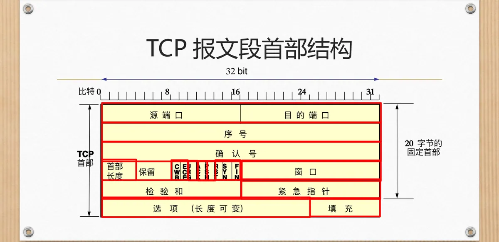
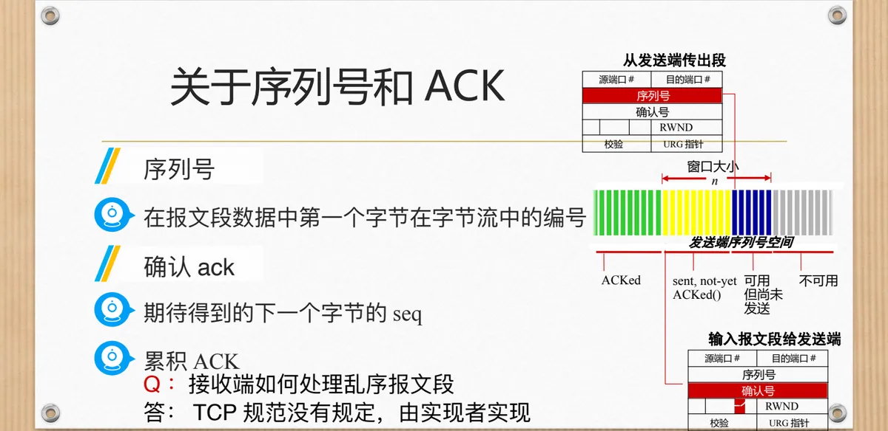
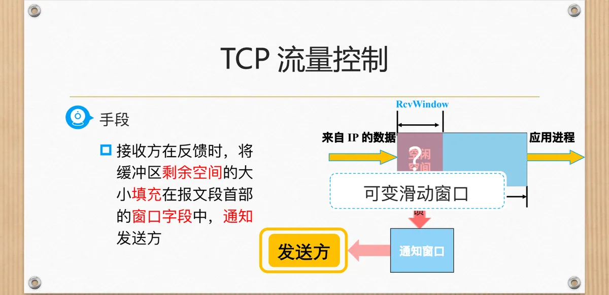
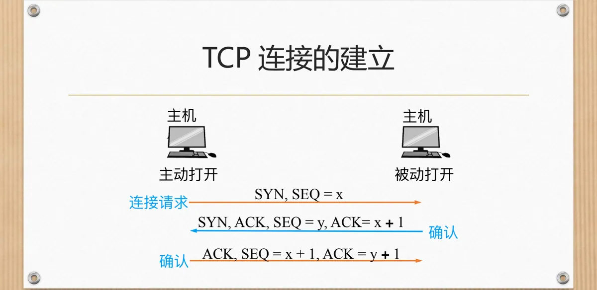
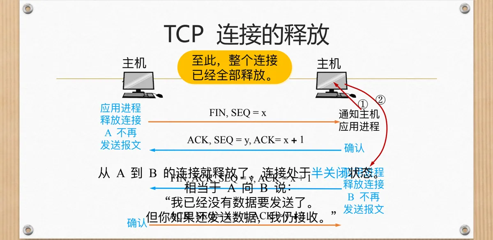
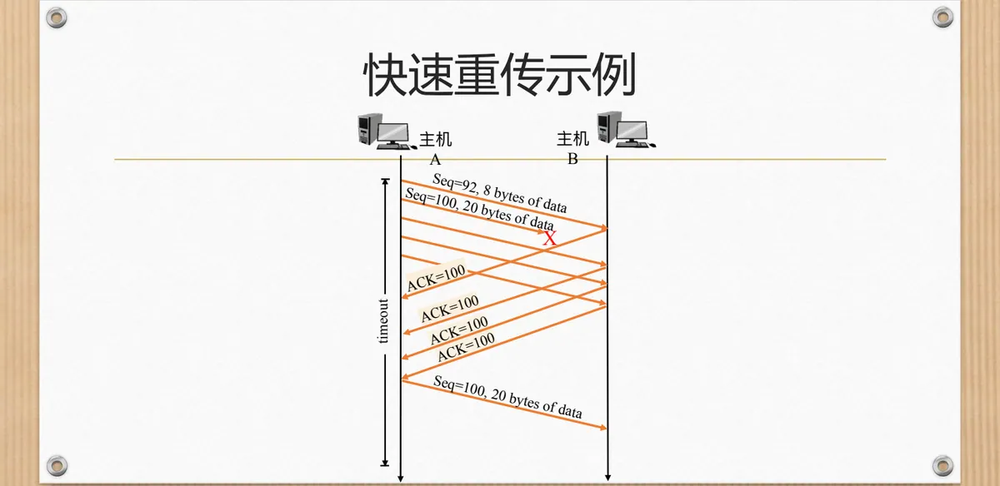

计算机通信与网络 · 第二版讲义 · 第 3 章 网络服务及应用
3.3 面向连接的可靠服务—TCP协议
运输层有两类服务：UDP 把可靠性留给应用负责，TCP 把可靠性做进协议内部。TCP（Transmission Control Protocol，传输控制协议）为两个应用进程提供一条可靠有序的字节流通道，为此必须一并解决连接管理、流量控制、确认与超时判断。下面依次看它承诺什么、用哪些字段兑现，连接怎样建立与释放，最后落到重传与超时的计算。
1. TCP 的目标与能力
课件把 TCP 的目标和能力列为七条：面向连接、全双工服务、点对点连接、可靠有序的字节流、流量控制、拥塞控制与流水线。
面向连接指交换数据前先建立逻辑连接、传完再释放；全双工指两个方向的数据可同时流动，确认也能随数据捎带回去；点对点限定一条连接只连接两个端点。交付给应用的是可靠有序的字节流：TCP 把数据看成无边界、按字节编号的流，不丢、不重、不乱序，应用两次写入的数据到了对方可能被合并或拆开。流量控制针对接收方，防止发得太快撑爆对方缓存；拥塞控制针对网络，按拥塞程度调整注入速率；流水线允许连续发出多个报文段而不必逐个等确认。课件列出相关 RFC：793、1122、2018、5681、7323。
与 3.2 节的 UDP 对照：UDP 无连接、不保证可靠、不做流量与拥塞控制。TCP 的可靠是用状态、编号、确认、重传和定时器换来的，代价是时延与开销，逐项对照见第一版讲义 5.3 UDP和TCP的对比。
2. TCP 报文段的首部结构
首部按 32 bit（4 字节）一行排列，图中标出第 0、8、16、24、31 位。固定部分共 20 字节：源端口与目的端口各占 16 位，序号与确认号各占整整一行 32 bit，然后是首部长度、保留位与六个控制位，以及窗口、检验和、紧急指针；其后是可变的选项字段，最后用填充补齐到 4 字节的整数倍。
字段分工要与后面的机制对应：窗口字段承载接收方的接收窗口，检验和用于检出比特差错。控制位中 SYN 建立连接、FIN 释放连接、RST 复位连接、PSH 提示尽快上交数据、ACK 表示确认号有效、URG 与紧急指针配合。课件备注补充的 ECE（明确拥塞通告回显）与 CWR（拥塞窗口缩减）服务于网络辅助的拥塞控制（第一版讲义 5.5 TCP的拥塞控制）。

3. 序列号与确认号
TCP 的可靠性建立在一条约定上：字节流里的每个字节都有编号。序号 SEQ 是本报文段数据部分第一个字节在字节流中的编号，数的是字节而非报文段。确认号 ACK 是「期待得到的下一个字节的序号」，它一次完成两件事：累积确认已经正确收到的字节，并告诉对方自己还在等哪一个字节。

发送方的序列号空间任意时刻分成三段：已确认的字节（ACKed）、已发出但未被确认的字节（sent, not yet ACKed）、可用但尚未发送的字节；确认不断回来，第一段向右推进、后两段随之滑动，这就是滑动窗口。对乱序到达的报文段，课件特别指出：TCP 规范没有规定接收方应该如何处理，由实现者自行决定——可以先缓存等缺口补齐，也可以直接丢弃。
最简单的 telnet 场景：
| 报文段 | 方向 | 作用 |
|---|---|---|
| Seq = 42, ACK = 79, data = 'C' | A → B | 发送 1 个字节的 C |
| Seq = 79, ACK = 43, data = 'C' | B → A | 回显 C，同时确认收到 |
| Seq = 43, ACK = 80 | A → B | 确认回显，A 侧显示 C |
确认号即「收到的最后一个字节编号加 1」；确认可单独成段，也可像主机 B 那样捎带在回显数据上。
4. TCP 的流量控制
TCP 接收方有一个接收缓存 RcvBuffer，从 IP 层上交的数据全部先缓存在里面再由应用进程取走，而应用进程读取数据可能很慢，发送方只顾发就会把缓存写满。流量控制的目标是：发送方不会因为传得太多太快而使得接收方缓存溢出。

接收方填入窗口字段的这个值就是接收窗口 RcvWindow——接收缓存总量减去已缓存但尚未被应用取走的数据量。发送方据此调整发送窗口：应用读得快窗口就张大，读得慢就收窄。第一版讲义 5.4 TCP的流量控制 有更细的讨论。
特殊情况是：接收方通知发送方 RcvWindow 为 0，而接收方又没有任何数据要传送给发送方。此时发送方无从得知窗口何时重新张开，课件的办法是让它持续发送只有一个字节数据的报文段去试探。窗口为 0 并不表示连接结束。
5. TCP 连接的建立与释放
面向连接体现在数据交换前后的两次「仪式」上：三次握手与四次挥手。
（1）建立连接：三次握手
主机 B 先创建监听套接字（被动打开），主机 A 主动打开发出连接请求，三个报文段依次是：
- A → B：SYN, SEQ = x。SYN 置 1 请求建立连接，x 为 A 选定的初始序号；
- B → A：SYN, ACK, SEQ = y, ACK = x + 1。B 确认 A 的请求（SYN 占去一个序号），同时发出自己的请求；
- A → B：ACK, SEQ = x + 1, ACK = y + 1。A 确认 B 的请求。
课件把这三步标为「连接请求—确认—确认」；第三步完成后，双方才确知对方的初始序号已被接收。

（2）释放连接：四次挥手
TCP 是全双工的，两个方向必须分别关闭。A 的应用进程决定不再发送数据时：
- A → B：FIN, SEQ = x。FIN 置 1 表示「我没有数据要发送了」；
- B → A：ACK, SEQ = y, ACK = x + 1。B 确认收到并通知应用进程，此时从 A 到 B 的连接已经释放，处于半关闭状态——相当于 A 向 B 说：「我已经没有数据要发送了，但你如果还发送数据，我仍接收。」
- B → A：FIN, ACK, SEQ = y, ACK = x + 1。B 的应用进程也决定释放连接；
- A → B：ACK, SEQ = x + 1, ACK = y + 1。至此整个连接全部释放。

6. TCP 连接管理的状态序列
把建立与释放连起来看，一条连接要走一串状态，客户机与服务器各维护一份状态机：
| 客户机 TCP 状态序列 | 服务器 TCP 状态序列 |
|---|---|
| CLOSED —（启动连接，发送 SYN）→ SYN_SENT —（接收 SYN & ACK，发送 ACK）→ ESTABLISHED —（启动关闭连接，发送 FIN）→ FIN_WAIT1 —（接收 ACK，不发送）→ FIN_WAIT2 —（接收 FIN，发送 ACK）→ TIME_WAIT —（等待 30 s）→ CLOSED | CLOSED —（创建监听套接字）→ LISTEN —（接收 SYN，发送 SYN & ACK）→ SYN_RCVD —（接收 ACK，不发送）→ ESTABLISHED —（接收 FIN，发送 ACK）→ CLOSE_WAIT —（释放连接，发送 FIN）→ LAST_ACK —（接收 ACK，不发送）→ CLOSED |
其中 TIME_WAIT 需要留意：主动关闭的一方发出最后一个 ACK 后并不立即回到 CLOSED，而要等待一段时间（课件标为 30 s），为「最后一个 ACK 丢失、对方重传 FIN」留出再次确认的机会。服务器的 CLOSE_WAIT 恰好对应客户机的 FIN_WAIT2。
7. 超时重传与 RTT 的估算
TCP 有两种重传机制：超时重传与快速重传。超时重传在发出报文段后启动定时器，超时间隔内没有收到确认就重传，于是关键问题变成：这个间隔该设多长。
直观的答案是应该略大于往返时间 RTT（Round-Trip Time，往返时间）。课件提醒两个方向：设得太短，确认还没回来就重传，造成不必要的重传；设得太长，则对丢包反应太慢。而 RTT 随链路拥塞、路由与排队时延波动，不能取固定值，只能估计。
估计先要测量。样本 RTT SampleRTT 是对报文段被发出到收到该报文段确认之间的时间进行测量，测量时忽略重传——重传过的报文段无法判断确认对应哪一次发送，测出来只会偏大。逐次测量很不平稳，所以要取最近几次测量的平均、越近的权重越大，即指数加权移动平均：
EstimatedRTT = (1 - α) * EstimatedRTT + α * SampleRTTα 的参考值是 0.125，第一次计算时令 EstimatedRTT = SampleRTT。课件给出的实测示例中，SampleRTT 上下跳动，而 EstimatedRTT 平稳得多。
只有基准还不够，还要估计 RTT 的波动幅度，课件用 DevRTT 刻画估算值与样本值之间的偏差：
DevRTT = (1 - β) * DevRTT + β * | SampleRTT - EstimatedRTT |β 的参考值为 0.25，第一次计算时取 DevRTT = 0.5 * SampleRTT。偏差越大说明 RTT 越不稳定，超时就要留更多余量，于是有：
TimeoutInterval = EstimatedRTT + 4 * DevRTT超时间隔由 EstimatedRTT 和 DevRTT 共同决定，一个给基准、一个给余量；同一题目见第一版讲义 5.6 TCP超时重传时间的选择。
8. 快速重传与超时间隔加倍
超时重传有一个天生的缺陷：超时周期往往太长。它按 RTT 的统计规律设定，本就留了余量，一旦真的丢包就要等到定时器到期才重传，增加了重发丢失分组的延时。TCP 因此又加了一条不依赖定时器的路径。
依据仍然在确认号上。发送方常要连续发送大量报文段，若某一个丢失，接收方收到的后续报文段都带着同样的确认号，等于在反复说「我还在等那个字节」——说明后面的数据还在到达，只是中间缺了一块。课件的规则是：如果发送方收到同一个数据的 3 个重复 ACK，它会认为确认数据之后的报文段丢失，于是立即重传，不等超时到来，这就是快速重传：在超时到来之前重传报文段。

配套的还有一条保守措施：每一次 TCP 重传均将下一次超时间隔设为先前值的两倍；而一旦收到上层应用的数据或对未确认数据的 ACK，说明通信重新有了进展，超时间隔就按 EstimatedRTT + 4 * DevRTT 重新计算。
本节小结
- TCP 提供面向连接、全双工、点对点的可靠有序字节流服务，配有流量控制、拥塞控制与流水线，与 3.2 节的 UDP 恰好对照。
- 报文段首部固定 20 字节，序号与确认号各占一行 32 bit；序号数的是字节，确认号是期待收到的下一个字节的序号，采用累积确认，乱序报文段如何处理由实现者决定。
- 流量控制靠接收窗口 RcvWindow 实现：接收方把缓存剩余空间填入窗口字段通知发送方，窗口为 0 时发送方用单字节报文段试探。
- 连接建立是三次握手（SYN、SYN & ACK、ACK），释放是四次挥手（FIN、ACK、FIN & ACK、ACK），中间经过半关闭状态；两端各有一套状态序列，TIME_WAIT 需等待 30 s。
- 超时间隔由 RTT 的统计量决定：SampleRTT 忽略重传，EstimatedRTT 与 DevRTT 都用指数加权移动平均计算，TimeoutInterval = EstimatedRTT + 4 * DevRTT。
- 快速重传靠 3 个重复 ACK 在超时之前重传丢失的报文段；每发生一次重传就把超时间隔加倍，直到收到新数据或新的确认才重新按公式计算。